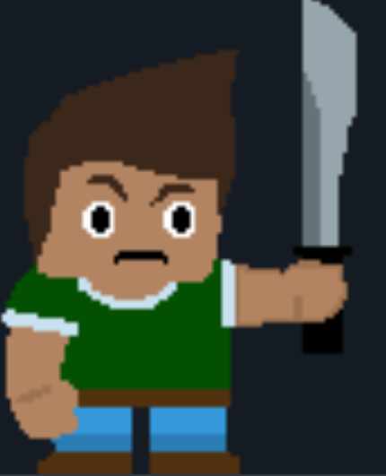
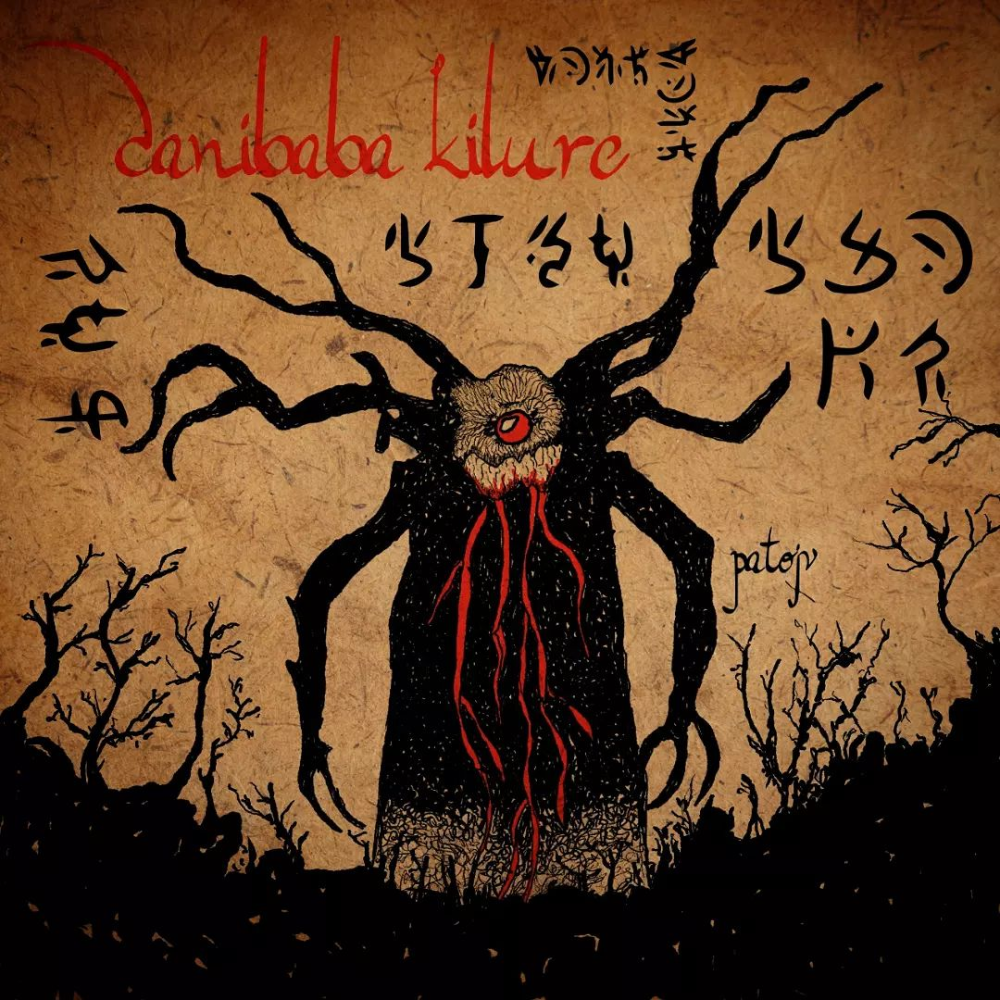
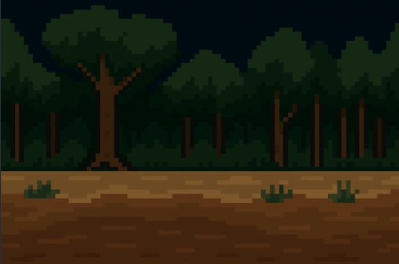
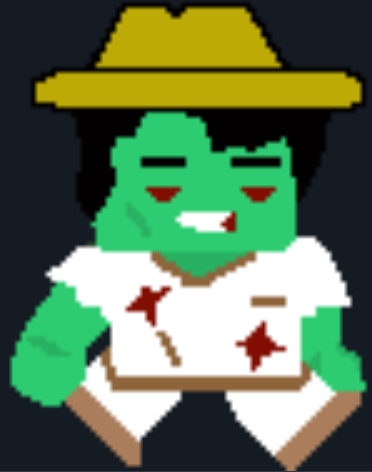

En el Beni postapocalíptico donde sobrevivieron dos hermanos llamados Luis Choque y Juan Choque. Vivian sin mucha preocupación ya que conocían toda la zona y lo tenían protegida.

Los hermanos estaban viviendo en un pueblo indígena llamado movima ubicado en el departamento del Beni - Bolivia.

Un día Juan Choque el hermano menor escucho unos ruidos a los lejos, el se acerco a observar a la selva y pudo ver que había un perrito, se acerco al perrito que era amigable, dé repente este perrito se convirtió en una sombra que capturo a Juan Choque llevándolo a las profundidades de la selva.
Este espíritu maligno llamado Canibaba-Kilure, habita en las profundidades de la selva amazónica donde la luz del sol no puede entrar, este espíritu con el paso del tiempo a pesar que sabia como convertirse en distintos animales, adquirió la habilidad de poseer muertos vivientes donde cambiaban sus ojos rojos y eran devotos del espiritu maligno que dominaba la selva.
Una historia de miedo y esperanza
Luis Choque, un niño valiente, se interna en un bosque maldito para encontrar a su hermanito desaparecido. No sabe que entre los árboles se oculta el Canibaba Kilure, una entidad capaz de poseer cuerpos de los muertos. “Los ojos del bosque” combina exploración, suspenso y leyendas bolivianas en un mundo pixelado hecho con Godot.
Personajes principales
Luis Choque
El protagonista. Un niño que enfrenta su miedo para rescatar a su hermano. Puede caminar, atacar y resistir el peligro del bosque. A lo largo del juego, Luis desarrolla un instinto de supervivencia cada vez más fuerte, aprendiendo a reconocer señales espirituales y a usar el entorno a su favor. Aunque el miedo lo acompaña constantemente, su valentía y determinación se vuelven su mayor arma frente a lo desconocido. Representa la inocencia y la esperanza frente al mal, una figura humana en medio del caos sobrenatural del Canibaba.
Canibaba Kilure
El espíritu maligno del bosque. Puede poseer cuerpos de zombies y controlar la oscuridad. Su verdadera forma aparece al final del juego. Se dice que nació de una antigua maldición chamánica, cuando el alma de un curandero fue corrompida por la venganza y el dolor. Desde entonces, vaga entre los árboles alimentándose del miedo humano, usando cuerpos abandonados como marionetas. Su presencia se manifiesta con susurros, risas distantes y una neblina espesa que marca el inicio de cada encuentro. Su objetivo es devorar las almas puras que se adentran en su dominio y arrastrarlas a la oscuridad eterna.
Galería del juego
Vistas del entorno, sprites y momentos importantes durante el desarrollo. Cada escenario representa un fragmento del viaje de Luis a través del bosque maldito, mostrando el contraste entre la belleza natural y el horror que acecha en la oscuridad. Las imágenes reflejan el estilo artístico del juego: tonos fríos, iluminación tenue y una ambientación inspirada en las leyendas rurales del oriente boliviano.
El bosque de noche
Sombras y ojos entre los árboles. Todo parece vivo. La luna ilumina apenas los caminos, y el viento arrastra murmullos de quienes se perdieron antes. El jugador debe avanzar con precaución, observando los movimientos del entorno: ramas que se quiebran, pasos que no son los suyos y destellos que anuncian la presencia del Canibaba.
Zombie poseído
Uno de los cuerpos que el Canibaba usa como marioneta. Antiguos habitantes del pueblo, ahora convertidos en sombras sin alma. Se mueven lentamente, con movimientos torpes y violentos, como si algo invisible los controlara desde dentro. Su mirada vacía y su respiración entrecortada son los últimos vestigios de humanidad que les quedan. Representan el terror físico del juego, pero también la tristeza de los que fueron víctimas del espíritu.